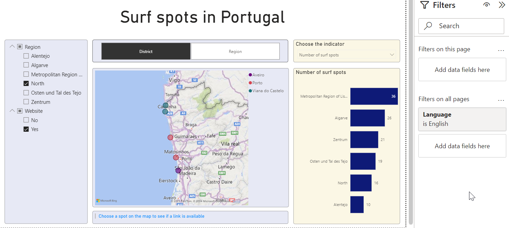

Introduction#
Idea#
In this tutorial, we present a basic setup for a Microsoft Power BI data model and one report page. As an example, we use a public dataset with 129 surf spots in Portugal.1Principais Spots de Surf (dados.gov.pt) The Power BI file (*.pbix) presented in this tutorial can be downloaded from the GitHub repository.2powerbi-example-surfspots.pbix
Note
We present some concepts that have proven useful in our practical work. However, there are many different ways to implement a certain functionality in Power BI.
Key features#
This Power BI data model and report have the following key features:
Dynamic multilingualism of (almost) the entire report
User can change the legend of the map
User can choose a measure for the bar chart on the right side
The report#
In Filters on all pages the user can choose the preferred language. The selected options (region and website) in the slicer are combined with an AND operator. More information you will find on the last page of this tutorial.

Microsoft Fabric#
In 2023 Microsoft launched the data analytics platform Microsoft Fabric and Power BI is a part of it. The Power BI Architecture itself consists of several components. A short description of each component you find in the article Components of Power BI Architecture3Components of Power BI Architecture (medium.com). To keep this tutorial simple, we will focus on the Power BI Desktop4Power BI Desktop software, which can be downloaded for free.
5What is the Power BI service?6Power BI pricingNote
If you want to share a report with other users in your organization, you have to publish the report to Power BI Service, a cloud service from Microsoft.5What is the Power BI service? For Power BI Service you (or your organization) need a Power BI PRO or Power BI Premium license.6Power BI pricing Keep in mind that with the Power BI PRO license the Model memory size limit is 1GB (the size of the *.pbix file).
Further reading#
This is not a typical beginner’s guide in which all concepts are explained from scratch. There are already plenty of helpful websites for beginners, like the official article from microsoft.com Get started with Power BI Desktop7Get started with Power BI Desktop (microsoft.com) or the Power BI Tutorial for Beginners8Power BI Tutorial for Beginners from datacamp.com.